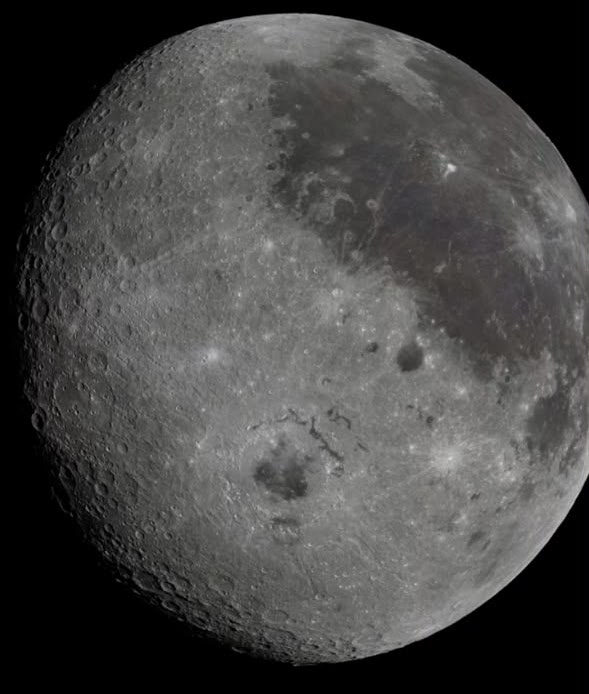

For the first time in over 50 years, humanity is returning to the lunar surface — and this time, we're staying.
Artemis is NASA's program to return humans to the Moon for the first time since Apollo 17 in 1972. Named after the twin sister of Apollo in Greek mythology, it will land the first woman and first person of color on the lunar surface.
This isn't just a repeat of Apollo. Artemis aims to build a sustainable presence on and around the Moon — using it as a stepping stone toward crewed missions to Mars.

The lunar south pole holds billions of tons of water ice — water that can be converted into rocket fuel, making deep space travel sustainable.
Permanently shadowed craters near the south pole contain billions of tons of water ice — critical for producing fuel in space.
The Moon is a 4.5-billion-year record of our solar system. South pole craters are pristine scientific time capsules.
The Moon serves as a proving ground for life support, navigation, and operations needed for the 7-month journey to Mars.
Four systems work together to carry astronauts from Earth to the Moon's surface and back.
Five missions chart humanity's return to the lunar surface and the beginning of a permanent presence beyond Earth orbit.
The Artemis Program is unfolding right now. Sign up to stay informed about launches, crew announcements, and mission milestones.